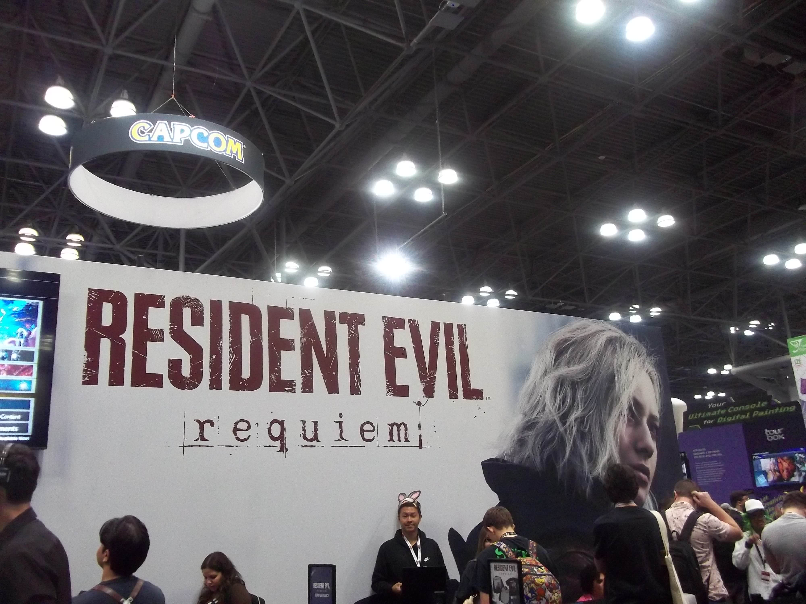

I'm not an expert. I'm barely even a player. I'm actually horrible at video games and shouldn't be around any FPS/TPS. I only have 20 hours on Resident Evil 4 Remake and have maybe 1-2 hours worth of experience on games like COD and Fortnite. Consider me so so cooked.
Resident Evil 6 is a 2012 third-person shooter game developed and published by Capcom. It is a major game title within the Resident Evil franchise. RE6 was released for the Playstation 3 and Xbox 360 and focused on characters Leon S. Kennedy, Chris Redfield, Jake Mueller, and Ada Wong as they confront the force behind a worldwide bioterrorist attack.
Capcom Website